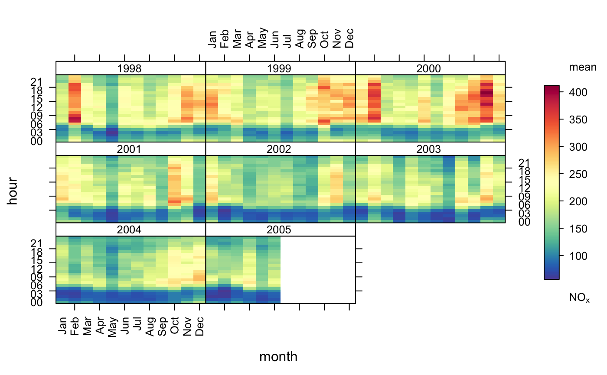
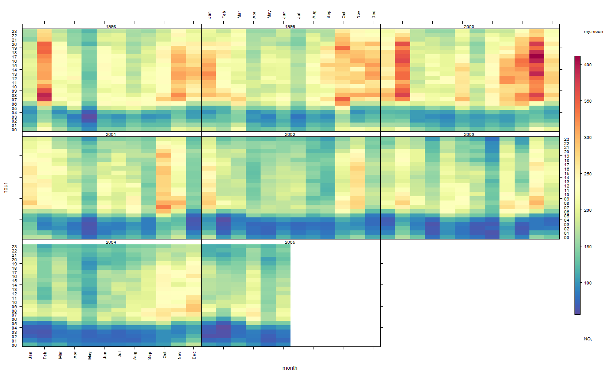

trendLevel.RdThe trendLevel function provides a way of rapidly showing a large amount of data in a condensed form. In one plot, the variation in the concentration of one pollutant can to shown as a function of three other categorical properties. The default version of the plot uses y = hour of day, x = month of year and type = year to provide information on trends, seasonal effects and diurnal variations. However, x, y and type and summarising statistics can all be modified to provide a range of other similar plots.
trendLevel(mydata, pollutant = "nox", x = "month", y = "hour", type = "year", rotate.axis = c(90, 0), n.levels = c(10, 10, 4), limits = c(0, 100), cols = "default", auto.text = TRUE, key.header = "use.stat.name", key.footer = pollutant, key.position = "right", key = TRUE, labels = NA, breaks = NA, statistic = c("mean", "max", "frequency"), stat.args = NULL, stat.safe.mode = TRUE, drop.unused.types = TRUE, col.na = "white", ...)
| mydata | The openair data frame to use to generate the
|
|---|---|
| pollutant | The name of the data series in |
| x | The name of the data series to use as the
|
| y | The names of the data series to use as the
|
| type | See |
| rotate.axis | The rotation to be applied to |
| n.levels | The number of levels to split |
| limits | The colour scale range to use when generating the
|
| cols | The colour set to use to colour the |
| auto.text | Automatic routine text
formatting. |
| key.header, key.footer | Adds additional text labels above
and/or below the scale key, respectively. For example, passing the
options |
| key.position | Location where the scale key should be plotted. Allowed arguments currently include “top”, “right”, “bottom” and “left”. |
| key | Fine control of the scale key via |
| labels | If a categorical colour scale is required then these
labels will be used. Note there is one less label than break. For
example, |
| breaks | If a categorical colour scale is required then these
breaks will be used. For example, |
| statistic | The statistic method to be use to summarise
locally binned |
| stat.args | Additional options to be used with |
| stat.safe.mode | An addition protection applied when using functions
direclty with |
| drop.unused.types | Hide unused/empty |
| col.na | Colour to be used to show missing data. |
| ... | Addition options are passed on to |
As well as generating the plot itself, trendLevel also
returns an object of class ``openair''. The object includes three main
components: call, the command used to generate the plot;
data, the data frame of summarised information used to make the
plot; and plot, the plot itself. If retained, e.g. using
output <- trendLevel(mydata), this output can be used to recover
the data, reproduce or rework the original plot or undertake further
analysis.
An openair output can be manipulated using a number of generic operations,
including print, plot and summary.
Summary statistics can also be extracted directly using results,
e.g. results(object) for output <- trendLevel(mydata).
trendLevel allows the use of third party summarising
functions via the statistic option. Any additional function
arguments not included within a function called using
statistic should be supplied as a list of named parameters
and sent using stat.args. For example, the encoded option
statistic = "mean" is equivalent to statistic = mean,
stat.args = list(na.rm = TRUE) or the R command mean(x,
na.rm= TRUE). Many R functions and user's own code could be
applied in a similar fashion, subject to the following
restrictions: the first argument sent to the function must be the
data series to be analysed; the name `x' cannot be used for any of
the extra options supplied in stat.args; and the function
should return the required answer as a numeric or NA. Note:
If the supplied function returns more than one answer, currently
only the first of these is retained and used by
trendLevel. All other returned information will be ignored
without warning. If the function terminates with an error when it
is sent an empty data series, the option stat.safe.mode
should not be set to FALSE or trendLevel may
fail. Note: The stat.safe.mode = TRUE option returns an NA
without warning for empty data series.
openColours and drawOpenKey for more
detailed plot control.
#basic use #default statistic = "mean" trendLevel(mydata, pollutant = "nox")#applying same as 'own' statistic my.mean <- function(x) mean(x, na.rm = TRUE) trendLevel(mydata, pollutant = "nox", statistic = my.mean)#alternative for 'third party' statistic #trendLevel(mydata, pollutant = "nox", statistic = mean, # stat.args = list(na.rm = TRUE))# NOT RUN { # example with categorical scale trendLevel(mydata, pollutant = "no2", border = "white", statistic = "max", breaks = c(0, 50, 100, 500), labels = c("low", "medium", "high"), cols = c("forestgreen", "yellow", "red")) # }